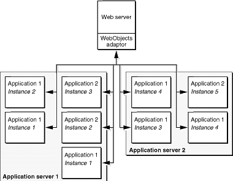

| PATH |

WebObjects encapsulates a number of key technologies that give it a significant advantage over other application servers.
Much of the data that is (or could be) presented on the Web already exists in electronic form. Not only can it be a challenge to create a website or Web application to present your data using conventional tools, it can also be a challenge just to access the data itself. Some products rely on hand- or assistant-generated SQL (Structured Query Language), leading to database-specific code that is difficult to optimize. WebObjects avoids these problems by using Enterprise Objects, a model-based mechanism for cleanly instantiating business objects directly from database tables. WebObjects handles all the interactions with the database including fetching, caching, and saving. This allows you to write your business logic against actual objects independent of the underlying data source. You can modify schemas, add or change databases, or even use totally a different storage mechanism without needing to rewrite your application.
WebObjects applications can access any database with a JDBC 2.0 driver. JDBC is an interface between Java platforms and databases.
An ideal Web application development system simplifies maintenance and encourages code reuse by enforcing a clean separation of presentation (HTML), logic (Java), and data (SQL). This modularity is inherent in the WebObjects programming model, which uses reusable components to generate Web pages directly from enterprise objects without the need to embed scripts or Java code inside your HTML. A component contains a template, which you-or a professional Web designer-can design and edit using standard Web authoring tools. A component can also implement custom behavior using a separate Java source file. Neither the template or the Java source file includes model-specific information.
The HTTP protocol used on the Web is inherently stateless; that is, each HTTP request arrives independently of earlier requests, and it's up to Web applications to recognize which ones come from an individual user or session. Therefore, most Web applications of consequence-as well as some of the more interesting dynamic publishing sites-need to keep state information, such as login information or a shopping basket, associated with each user session.
Without using cookies, WebObjects provides objects that allow you to maintain information for the life of a particular client session, or longer. This makes it particularly easy to implement an application like a Web-based online store: you don't have to do anything special to maintain the contents of the user's shopping cart or other data over the life of the session. In addition, your online store could even monitor individual customer buying patterns and then highlight items they're more likely to be interested in the next time they visit your site.
The power of WebObjects comes from a tightly integrated set of tools and frameworks, facilitating the rapid assembly of complex applications. At the heart of this system is the Project Builder Integrated Development Environment (IDE), which manages your Java business logic and tracks all the supporting models and components. As mentioned above, WebObjects also includes powerful assistants and frameworks that allow the rapid creation of HTML or Java Client applications directly from the database. Advanced developers can tap into the object-oriented Java APIs underlying all the different frameworks, allowing virtually unlimited customization and expandability.
WebObjects applications are 100% Pure Java, which means they can be deployed on any platform with a certified Java 2 virtual machine.
Static websites and traditional client-server applications have one strong suit: they both leverage the power of the client platform, minimizing the load on the server. It doesn't take all that much processing power to serve up a set of static Web pages. Dynamic Web applications, although a tremendous advance over static pages, require additional server power to access the dynamic data and construct the Web pages or Java Client user interface "on the fly."
The WebObjects application server is both efficient and scalable. With WebObjects, if more power, reliability, or failover protection is needed, you can run multiple instances of your application, either on one or on multiple application servers (see Figure 2-4). You can choose from one of several load-balancing algorithms (or create your own) that determine which instance each new user should connect to. And, either locally or from a remote location, you can analyze site loads and usage patterns and then start or stop additional application instances as necessary. Load balancing is a very powerful feature of WebObjects that allows you to add more server capacity as the need arises without needing to implement a load-balancing algorithm yourself.
Figure 2-4 Multiple instances, multiple applications

© 2001 Apple Computer, Inc.